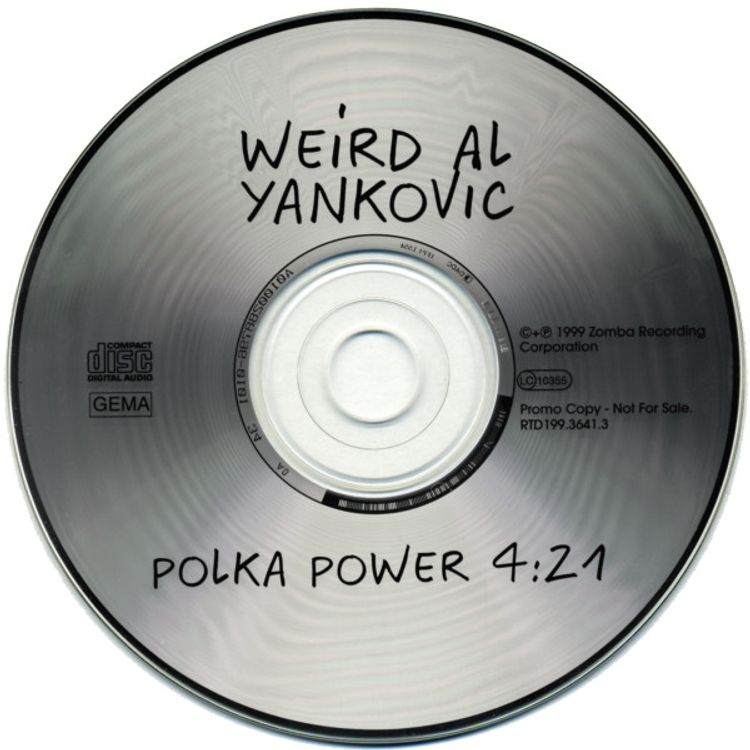

"Polka Power!" é o oitavo medley de polca gravado por "Weird Al" Yankovic e faz parte do álbum Running with Scissors, lançado em 1999. O título é uma referência à expressão "Girl Power!", popularizada pelo grupo Spice Girls, que também é o primeiro artista a aparecer no medley. A música foi lançada como single promocional na Alemanha, pois a gravadora acreditava que um medley de polca poderia ter um bom desempenho comercial no país. Junto com "Hooked on Polkas", "Polka Power!" está entre os poucos medleys de polca de Al lançados como single.
O medley reúne uma grande quantidade de músicas populares da década de 1990, transformando seus trechos em uma sequência rápida e bem-humorada no estilo característico de "Weird Al". As músicas presentes no medley são:
Ao final, o medley termina com "W.A.Y. Moby Polka", uma composição de "Weird Al" que funciona como encerramento da sequência. A música também é a terceira polca de Al a utilizar "Shave and a Haircut" durante o outro. Com sua enorme quantidade de referências a sucessos da época, "Polka Power!" representa bem a tradição dos medleys de polca de Yankovic, condensando diversos hits dos anos 1990 em uma única faixa rápida, caótica e divertida.
Yeah, I'll tell ya what I want, what I really really want
So tell us what you want, what you really really want
I'll tell ya what I want, what I really really want
So tell us what you want, what you really really want
I wanna ha, I wanna ha, I wanna ha, I wanna ha
I wanna really really really wanna zigga zigga ah
If you wanna be my lover, you gotta get with my friends (gotta get with my friends)
Make it last forever, friendship never ends
If you wanna be my lover, you have got to give (you've got to give)
Taking is too easy, but that's the way it is
Hey!
I'm not sick, but I'm not well
And I'm so hot, 'cause I'm in hell
I'm not sick, but I'm not well
And it's a sin (yes it's a sin) to live so well
Ghetto superstar - that is what you are
Coming from afar, reaching for the stars
Run away with me, to another place
We can rely on each other, uh huh
From one corner to another, uh huh
Everybody (yeah)
Rock your body (yeah)
Everybody
Rock your body right
Backstreet's back, all right
All right
So don't delay, act now, supplies are running out
But now if you're still alive, six to eight years to arrive
And if you follow, there may be a tomorrow but if the offer's shun
You might as well be walking on the sun
Might as well be walking on the sun
Intergalactic planetary, planetary intergalactic
Intergalactic planetary, planetary intergalactic
Intergalactic planetary, planetary intergalactic
I get knocked down, but I get up again
You're never gonna keep me down
I get knocked down, but I get up again
You're never gonna keep me down
I get knocked down, but I get up again
You're never gonna keep me down
I get knocked down, but I get up again
You're never gonna keep me down
Quicker than a ray of light
Quicker than a ray of light
Quicker than a ray of li-i-i-i-i-i-i-i-ight
I wanna push you around, well I will, well I will
I wanna push you down, well I will, well I will
I wanna take you for granted
I wanna take you for granted
Yeah, yeah, well I will
I want something else
To get me through this semi-charmed kinda life, baby baby
I want something else
I'm not listening when you say good-bye
Doot doot doot doot do do do
Doot doot doot doot do do do
Doot doot doot doot do do do
Do do do do do do
There's lots of pretty, pretty ones
That want to get you high
But all the pretty, pretty ones
Will leave you low and blow your mind
We're all stars now in the dope show
We're all stars now in the dope show
Mmmbop, do floppa do wop
Do be dop ah
Do wap, do zap ah, do
Yeah-ee yeah
Mmmbop, do b'zap ah, do wop
Do be dop ah
Do wop, doom zap ah, do
I smell sex and candy here
Who's that lounging in my chair
Who's that casting devious stares in my direction
Mama, this surely is a dream
Yeah, yeah mama, this surely is a dream
Dig it, yeah mama, this surely is
Closing time
One last call for alcohol
So finish your whiskey or beer
Closing time
You don't have to go home
But you can't stay here
I know who I wanna take me home
I know who I wanna take me home
I know who I wanna take me home
Take us home
'Cause it's closing time
Yeah it's closing time
We're talkin' 'bout closin' time
It's really closin' time
Hey